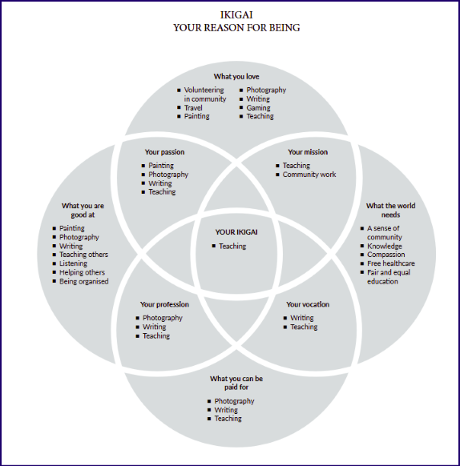

Building an app from a PDF (because AI can!)
AI and I built an interactive web app from a PDF, with drag-and-drop, auto-save, and an interactive five-step workflow, in a week! (I'm thrilled about how well it works too!)
This project was about converting a PDF (and complex philosophical concepts) into intuitive user experiences while leveraging GitHub Copilot and Claude for rapid prototyping and problem-solving.
I'm documenting what I've learned about collaborating with AI to build something real.
Why Ikigai
I first learnt about “Ikigai” in the book 'Ikigai: The Japanese Secret to a Long and Happy Life' by Francesc Miralles and Hector Garcia. Although I later discovered that the book, as well as the Positive Psychology PDF that this app is is based on, are nothing like the actual Japanese concept; they’re more a cultural appropriation of the eastern philosophy.

That said, I find the framework insightful. The guided process of exploring passion, mission, vocation, and profession resonates with me, and I do think people could benefit from it as an interactive tool.
The fear
My biggest concern isn’t failure, it's not knowing how to handle AI-generated code if something goes wrong. If the code breaks or becomes messy, I wouldn't know where to begin fixing it, as a non-coder. I've learned though, that the trick to working with AI is to build piece-by-piece, test frequently, and catch problems early.
First prompt
I started with:
I am building an Ikigai web-app based on the Ikigai PDF. Analyze the attached files and list the top improvements you would make to have a fully-functional, highly modern, well-designed interactive app that helps the reader find their Ikigai.
The PDF is the only source of information. Do not hallucinate new content about Ikigai, and do not create new artifacts unless asked to. Do not skim over or lose the details in the PDF.
Ask me questions on the intended behaviour, design, purpose, etc of the app until you have enough information for your research and analysis.
This prompt set the tone for everything. I established boundaries, provided constraints, and requested collaboration. It was a framework for how I wanted to work with AI.
What clicked
Prompt engineering felt abstract until I started practicing it. Prompts that clicked:
- Few-shot prompts: Showing examples helped Claude understand my expectations better than lengthy explanations.
- Chain of thought prompts: Asking Claude to think through problems step-by-step before generating code reduced errors.
- Outline expansion prompts: Starting with a simple structure and expanding section by section kept things manageable.
- Flipped interaction prompts: Instead of telling Claude what to do, I'd ask it to interview me about my goals. This made the collaboration feel more like partnership.
What I like about the app
- Step 2: Guides users through questions about what they love, what they're good at, what the world needs, and what they can be paid for. The UI provides thoughtful prompts and self-reflective questions for each circle.
- Step 3: Find overlapping responses, where users identify which responses fit into multiple circles, and overlaps reveal patterns.
These steps feel deeply insightful. They're also the pages I plan to make more “mine” as the project evolves.
What's next
Now that Phase 1 is complete, here's the plan for Phase 2:
Run the audit skills
Claude and I built 5 Claude Skills to audit the app:
- UX/UI audit
- Code quality review
- Content accuracy check
- Accessibility audit
- Security analysis
I’ve set up Notion to track the issues that these Skills generate. Claude designed the (ten) databases required to store these issues by Skill type. All I had to do was nudge it in the direction I wanted. (More about this in the next blog!)
Fix issues
- Set up an issue tracker via GitHub MCP with Notion
- Find a way to automate issue fixes (ambitious, I know)
Frustrations and challenges
Claude routinely generated code for alternate files without me asking for them. Sometimes even after I specifically told it not to, it would create new artifacts when all I needed was iterations on what we had.
I learned to use Claude Projects and project descriptions to set persistent context, and used a universal 'Truth Protocol' to remind Claude of my working style. I even reset the chat a few times to get back on track. This wasn't Claude being bad; it was me learning how to communicate better.
I couldn't get the Notion MCP working initially because of conflicting setup info from both Claude and Notion - the documentation didn't align and I hit a wall. I have a similar challenge ahead: integrating with GitHub MCP to make app updates trackable through versions.
I'm also about to run audit skills on the app for UX, accessibility, security, code quality, and content accuracy, and the resulting number of issues might get overwhelming.
What I've learned
I'm excited at having gotten this far! With AI, I just have to think an idea through and choose my prompts. My top takeaways:
- AI slop is real. A human in the loop is non-negotiable. AI is a tool, not the solution.
- Start with constraints. Tell the AI what not to do as clearly as what to do.
- Collaborate, don't dictate. Ask AI to interview you about your goals before generating solutions.
- Test frequently. The worst-case scenario isn't building something broken. It's building something you can't debug.
- Use Projects to set persistent context. It saves you from repeating yourself.
- Expect frustration; AI will misunderstand you, and you'll reset chats. That's part of the process!
- Training in prompt engineering helped me a lot. I highly recommend the entire series by Prof Jules White, Vanderbilt University on Coursera.
Why this matters
I enjoy research and problem solving. I haven't pinpointed my mission or even my ikigai yet, but I do enjoy the learning that came with building this app. And maybe that's just it!